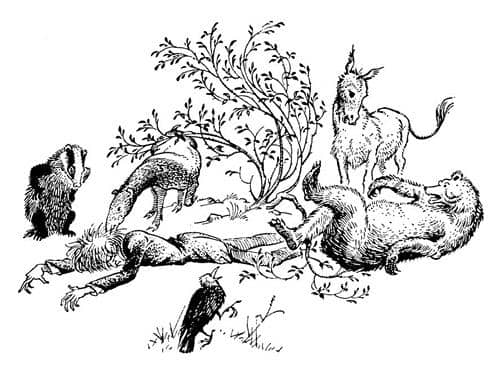

Digory ve Dayısı Tehlikede
Andrew Dayı’nın, iki çocuk ve Arabacı ile aynı türden bir yaratık olduğunu ilk anda görmedikleri için hayvanların çok aptal olduklarını düşünebilirsiniz. Fakat onların giysiler hakkında bir şey bilmediklerini hatırlamalısınız. Hayvanlar, Polly’nin giysisini, Digory’nin Norfolk takım elbisesini ve Arabacı’nın melon şapkasını, kendi postları ve tüyleri gibi, onların vücutlarının bir parçası sanıyorlardı. Eğer Çilek bilmese ve onlarla konuşmuş olmasalar, bu üçünün aynı cinsten olduklarını bile anlamayacaklardı. Ancak Andrew Dayı’nın boyu çocuklardan oldukça uzundu ve Arabacı’dan da epeyce zayıftı. Beyaz yeleği dışında (artık pek beyaz değildi) siyahlar içindeydi. Kırlaşmış ve taranmamış saçları (şimdi gerçekten karmakarışıktı) diğer üç insanda gördükleri hiçbir şeye benzemiyordu. En kötüsü de, konuşamıyor gibi gözüküyordu. O nedenle şaşırmış olmaları doğaldı.
Konuşmayı denemişti. Buldog onunla konuştuğunda (ya da onun sandığı gibi önce homurdanıp sonra da hırladığında) titreyen ellerini uzatmış ve nefes nefese “İyi köpekçik” sonra da “zavallı iyi köpek” demişti. Fakat hayvanlar onu, onun hayvanları anladığından daha fazla anlamıyorlardı. Hiçbir kelimeyi işitmemişlerdi, sadece zayıf cızırdayan bir ses duymuşlardı. Belki duymadıkları da iyi olmuştu, çünkü benim bildiğim hiçbir köpek, özellikle de Narnialı Konuşan Köpek, ‘İyi Köpek’ diye çağrılmayı, sizin ‘Küçüğüm’ diye çağrılmayı sevmenizden daha fazla sevmez.
Sonunda Andrew Dayı bayılarak ölü gibi yere düştü.

“İşte!” dedi Yaban Domuzu, “Sadece bir ağaçmış. Zaten başından beri öyle düşünmüştüm.” (Hiç kimsenin bayılıp düştüğünü görmediklerini hatırlayın.)
Andrew Dayı’nın her tarafını koklamakta olan Buldog başını kaldırıp, “Bu bir hayvan. Kesinlikle bir hayvan. Ve muhtemelen diğer üçüyle aynı türden” dedi.
“Bana öyle görünmüyor” dedi ayılardan biri. “Hayvanlar onun gibi yere düşmezler. Bizler hayvanız ve onun gibi düşüvermiyoruz. Biz ayakta dururuz. Bak böyle.” Arka ayaklarının üzerine dikildi, bir adım geri attı ve bir dala takılarak sırtüstü yuvarlandı.
“Üçüncü Şaka, Üçüncü Şaka, Üçüncü Şaka!” dedi Karga büyük bir heyecanla.
“Ben hâlâ bir ağaç olduğunu düşünüyorum” dedi Yaban Domuzu.
“Eğer ağaçsa” dedi ayılardan biri, “arı yuvası olabilir üzerinde.”
“Eminim ağaç değil” dedi Porsuk. “Düşmeden önce konuşmaya çalıştığı kanısındayım.”
“O sadece dalların arasındaki rüzgârın sesiydi” dedi Yaban Domuzu.
“Eminim” dedi Karga, Porsuk’a “onun bir konuşan hayvan olduğunu söylemek istemiyorsun. Hiçbir söz etmedi ki.”
“Ama yine de biliyorsun ki” dedi Fil (dişi Fil kuşkusuz, hatırlayacağınız gibi kocası Aslan’la beraber gitmişti). “Ama yine de biliyorsun ki bir tür hayvan olabilir. Ucundaki o beyazımsı yumru bir çeşit yüz olamaz mı? Ve o delikler gözleri ve ağzı olamaz mı? Burnu yok elbette. Ama yine de – ehem – dar kafalı olmamalı. Çok azımız, gerçekten burun denilebilecek şeye sahip.” Hoşgörülebilecek bir gururla hortumuna göz attı.
“Bu sözlere şiddetle itiraz ediyorum” dedi Buldog.
“Fil biraz haklı” dedi Tapir.
“Size ne olduğunu söyleyeyim!” dedi Eşek ve parlak fikrini açıkladı: “Belki de konuşabileceğini sanan, konuşamayan bir hayvandır.”
“Ayağa kaldırabilir miyiz acaba?” dedi Fil düşünceli bir şekilde. Andrew Dayı’yı hortumuyla özenle tutup doğrulttu. Ne var ki baş aşağı doğrultmuştu ve Andrew Dayı’nın cebinden iki yarım lira, üç şilin ve bir de altı peni düştü. Elbette bunun yararı olmadı. Andrew Dayı yeniden düşüp yere serildi sadece.
“İşte!” dedi birkaçı, “Bu bir hayvan olamaz. Canlı değil ki.”
“Size söylüyorum, bu bir hayvan” dedi Buldog, “Kendiniz koklayın.”
“Koklamak her şey değildir” dedi Fil.
“Neden?” dedi Buldog, “Birisi burnuna güvenemezse nesine güvenebilir ki?”
“Şey, beynine belki” dedi Fil.
“Bu sözlere şiddetle itiraz ediyorum” dedi Buldog.
“Bir şeyler yapmamız gerekiyor” dedi Fil. “Çünkü bu şeytan olabilir ve Aslan’a gösterilmesi gerek. Çoğunluğumuz ne düşünüyor? Bu bir hayvan mı yoksa ağaç türü bir şey mi?”
“Ağaç! Ağaç!” dedi düzinelerce hayvan.
“İyi o zaman” dedi Fil. “Eğer ağaçsa dikilmesi gerekir. Bir çukur kazmamız gerekiyor.”
İki köstebek işin bu kısmını hızla hallettiler. Andrew Dayı’nın hangi tarafından toprağa gömüleceği üstüne biraz tartışma çıktı ve o kafaüstü gömülmekten kılpayı kurtuldu. Birçok hayvan bacaklarının onun dalları olduğunu ve bu nedenle gri ve kabarık şeyin (başından bahsediyorlardı) kökleri olması gerektiğini söylemişti. Fakat diğerleri onun çatallı kısmının çamurlu olduğunu ve köklerde olduğu gibi iki yana açıldığını söylediler. Sonunda ayaklarında karar kıldılar. Toprağı sıkıştırdıklarında dizlerinin üzerine kadar gömülmüştü.
“Çok fena solmuş görünüyor” dedi Eşek.
“Elbette, biraz sulanması gerekir” dedi Fil. “Sanırım, diyebilirim ki (orada bulunanların hiçbirini incitmek istemiyordu), belki, bu tür bir iş için benimki gibi bir burun—”
“Bu sözlere şiddetle itiraz ediyorum” dedi Buldog. Ancak Fil sessizce nehre yürüdü, hortumunu suyla doldurdu ve Andrew Dayı’yla ilgilenmek üzere geri geldi. Akıllı hayvan, Andrew Dayı’nın tepesinden galonlarca su dökülene kadar aynı işi yapmayı sürdürdü. Sanki giysileriyle banyo yapmışçasına, Andrew Dayı’nın redingotunun eteklerinden sular akıyordu. O ne uyanıştı! Fakat biz onu yaptığı kötülükleri düşünmek üzere (böyle akla uygun şeyler yapma ihtimali varsa) bırakıp daha önemli şeylere bakalım.
Çilek, sırtında Digory ile öbür hayvanların gürültüsü duyulmayıncaya kadar koşturdu. Şimdi Aslan ve seçtiği temsilcilerin oluşturduğu küçük topluluk epeyce yakındaydı. Digory böylesine ciddi bir toplantıyı kesmenin imkânsızlığını biliyordu, ancak bunu yapmasına gerek kalmadı. Aslan’ın bir sözüyle, erkek Fil, Kuzgunlar ve diğerleri kenara çekildi. Digory attan indi ve kendini Aslan’la yüz yüze buldu. Aslan düşündüğünden daha büyük, daha güzel, daha parlak altın renkli ve daha korkunçtu. O büyük gözlerin içine bakmaya cesaret edemedi.
“Lütfen – Bay Aslan – efendim” dedi Digory, “siz – ben – lütfen annemi iyileştirmek için bu ülkenin sihirli meyvelerinden birkaç tane verebilir misiniz?”
Çaresizce Aslan’ın “Evet” diyeceğini umuyor; “Hayır” demesinden fena halde korkuyordu. Fakat Aslan hiçbirini yapmayınca şaşırdı.
“İşte çocuk bu” dedi Aslan, Digory’ye değil de temsilcilerine bakarak. “Onu yapan çocuk bu.”
“Eyvah!” diye düşündü Digory, “Ne yaptım acaba?”
“Adem’in çocuğu” dedi Aslan. “Yeni ülkem Narnia’da şeytani bir Cadı var. Bu iyi hayvanlara onun buraya nasıl geldiğini anlat.”
Digory’nin aklından söyleyebileceği düzinelerce şey geçti, fakat gerçeklerden başka hiçbir şeyi söylemeyecek kadar akıllıydı.
“Onu ben getirdim, Aslan” diye cevap verdi alçak bir sesle.
“Ne amaçla?”
“Onu benim dünyamdan kendi dünyasına geri götürmek istemiştim. Kendi yerine geri götürdüğümü sanmıştım.”
“O sizin dünyanıza nasıl geldi, Adem’in oğlu?”
“Bü..büyüyle.”
Aslan hiçbir şey söylemedi. Digory yeteri kadar açıklamadığını biliyordu.
“Dayımdı, Aslan” dedi. “Sihirli yüzüklerle bizi dünyamızdan dışarı o gönderdi, en azından önce Polly’yi gönderdiği için ben de gitmek zorunda kaldım, sonra Charn denilen bir yerde Cadı’yla karşılaştık ve o bize tutunarak—”
“Cadı’yla karşılaştınız mı?” dedi Aslan, içinde kükreme tehdidi sezilen alçak bir sesle.
“Uyandı” dedi Digory perişan halde. Sonra bembeyaz olarak, “Yani, ben uyandırdım. Çünkü çanı çalarsam ne olacağını öğrenmek istemiştim. Polly istemedi. Onun hatası yoktu. Ben – ben onunla boğuştum. Biliyorum yapmamalıydım. Çanın altındaki yazılar beni biraz büyülemişti sanırım.”
“Gerçekten büyülenmiş miydin?” dedi Aslan hâlâ alçak sesle ve derinden konuşarak.
“Hayır” dedi Digory. “Şimdi anlıyorum ki büyülenmemiştim. Sadece öyle sanıyordum.”
Uzun bir sessizlik oldu. Digory tüm bu süre boyunca “Her şeyi mahvettim. Annem için hiçbir şey alma şansım yok artık” diye düşünüyordu.
Aslan yeniden konuştuğunda sözleri Digory’ye değildi.
“Dostlarım, görüyorsunuz ki” dedi, “size verdiğim yeni ve temiz dünyaya, yedi saat bile geçmeden şeytani bir güç girdi; Adem’in bu oğlu tarafından uyandırılıp buraya getirildi.” Hayvanlar ve hatta Çilek bile gözlerini Digory’ye çevirdi, öyle ki o anda Digory yer yarılsın da içine girsin istiyordu. “Fakat canınızı sıkmayın” dedi Aslan hâlâ hayvanlara konuşarak. “Bu şeytandan kötülük gelecek ama buna uzun zaman var ve ben kötülüklerin çoğunluğunun bana yönelmesini sağlayacağım. Bu arada buranın yüzyıllarca, mutlu bir dünyada mutlu bir ülke olmasına çalışalım. Ve Adem’in ırkı bizi incittiğine göre, iyileşmemize de yardım edecek. Siz ikiniz, yaklaşın.”
Bu son sözler yeni gelen Polly ve Arabacı’ya söylenmişti. Polly ağzı aralık, gözlerini dört açmış Aslan’a bakıyor ve Arabacı’nın elini sımsıkı tutuyordu. Arabacı Aslan’a şöyle bir baktı ve kimsenin çıplak görmediği başından melon şapkasını çıkardı. Şapkasız daha genç ve nazik, Londralı bir Arabacı’dan ziyade taşralı biri gibi görünüyordu.
“Oğlum” dedi Aslan Arabacı’ya, “Ben seni uzun süredir tanıyorum. Sen beni tanıyor musun?”
“Aaaa, hayır efendim” dedi Arabacı. “En azından bildiğimiz anlamda değil. Fakat bir şekilde, eğer serbestçe konuşabilirsem, daha önce karşılaştığımızı hissediyorum.”
“Tabii konuşabilirsin” dedi Aslan. “Beni, sandığından daha iyi biliyorsun ve daha iyi tanıyacak kadar yaşayacaksın. Bu ülkeyi nasıl buluyorsun?”
“Çok hoş bir yer efendim” dedi Arabacı.
“Sürekli burada yaşamak ister misin?”
“Eh, efendim anlarsınız ki ben evli bir adamım. Eğer karım burada olsaydı, ikimiz de Londra’ya geri dönmek istemezdik sanırım. İkimiz de gerçekten taşralı insanlarız.”
Aslan yelesinin çevrelediği başını kaldırdı, ağzını açtı ve çok yüksek olmayan ancak güçlü, uzun ve tek bir ses çıkardı. Polly bunu işittiğinde yüreği hopladı. Bunun bir çağrı olduğunu ve işiten kim olursa olsun, ona uymak isteyeceğini ve dahası, arada ne kadar çok dünya ya da çağ olursa olsun uyabileceğini adı gibi biliyordu. Böyle olduğu içindir ki, müthiş bir merak içinde olmasına karşın, aniden müşfik ve güvenilir yüzlü genç bir kadının belirip yanında ayakta durması karşısında ne şaşırdı, ne de sarsıldı. Polly onun, Arabacı’nın karısı olduğunu hemen anladı. Bizim dünyamızdan insanı zahmete sokan yüzüklerle değil; bir kuşun yuvasına doğru uçması gibi basit, hızlı ve hoş bir şekilde getirilmişti. Genç kadın, göründüğü kadarıyla bir çamaşır gününün ortasındaydı, çünkü bir önlük giymişti, kolları sıvanmıştı ve ellerinde köpükler vardı. Eğer en iyi giysilerini giyecek zamanı olsa (en güzel şapkasının üzerinde yapma kirazlar vardı) bundan daha hoş görünmezdi.
Kuşkusuz, rüyada olduğunu sanmıştı. Bu nedenle kocasının yanına koşup neler olduğunu sormadı. Rüyada olduğundan o kadar emin değildi belki ama yine de bilinmeyen bir nedenle pek korkmuş görünmüyordu. Sonra, Aslan’a baktı ve o günlerde taşralı kızların hâlâ bildiği küçük bir reverans yaptı. Daha sonra da Arabacı’nın yanına giderek elini tuttu ve etrafına utangaçça bakmaya başladı.
“Çocuklarım” dedi Aslan, gözlerini onlara dikerek. “Sizler Narnia’nın ilk kral ve kraliçesi olacaksınız.”
Arabacı ağzını şaşkınlıkla açtı ve karısı kıpkırmızı oldu.
“Sizler bu yaratıklara hükmedecek, onlara isim verecek ve adalet dağıtacaksınız. Düşmanları saldırdığında da onları düşmanlarından koruyacaksınız. Kuşkusuz düşmanlarınız olacaktır, çünkü bu dünyada kötü bir Cadı var.”
Arabacı zorlukla iki üç kere yutkunup gırtlağını temizledi.
“Özür dilerim efendim” dedi, “çok teşekkür ederim (benim hanım da teşekkür ediyor) fakat böyle bir işi kaldırabilecek cinsten biri değilim ben. Hiç eğitim görmedim, anlarsınız.”
“Eh,” dedi Aslan, “bel ve pulluk kullanıp yiyeceğini topraktan çıkartabilir misin?”
“Evet efendim, bu türden işleri biraz yapabilirim; öyle büyütüldüm ben.”
“Bu yaratıklara, sizin doğduğunuz dünyadaki dilsiz hayvanlar gibi köle olmadıklarını, konuşan ve özgür kullar olduklarını hatırdan çıkarmadan, şefkatle ve gerektiği gibi hükmedebilir misin?”
“Bunu anlıyorum efendim” diye cevap verdi Arabacı. “Hepsine eşit davranmaya çalışacağım.”
“Çocuklarını ve torunlarını aynı şekilde davranacak biçimde büyütecek misin?”
“Denemek benim elimde efendim. Elimden geleni yaparım, değil mi Nellie?”
“Çocukların ya da diğer yaratıklar arasında kimseyi kayırmayacaksın, ayrıca kimsenin öbürünü aşağılayıp zora koşmasına izin vermeyeceksin değil mi?”
“Bu tür şeylere asla tahammül edemedim efendim ve gerçek de bu. Eğer onları öyle bir durumda yakalarsam, gereğini yaparım” dedi Arabacı (Tüm bu süre boyunca Arabacı’nın konuşması gittikçe yavaşlayıp zenginleşiyordu. Londra’da edindiği keskin ve hızlı konuşma tarzından çok, çocukluğundaki taşralı konuşmasına benziyordu).
“Düşmanlar ülkeye saldırsa (düşmanlarınız olacaktır) ve savaş olsa, saldırırken en önde ve gerilerken en arkada olacak mısın?”
“Şey efendim” dedi Arabacı yavaşça, “denenmeden önce insanları bilmek zordur. Yumuşakbaşlı biri olduğumun ortaya çıkabileceğini de düşünmek gerek. Yumruk kavgasından başka bir şey bilmem ben. Denerim – yani görevimi yapmayı – denemeyi umuyorum.”
“O zaman” dedi Aslan, “kralların yapması gereken her şeyi yapmış olursun. Taç giyme törenini şimdi yapacağız. Sen, çocukların ve torunların kutsanacaksınız ve onların bazıları Narnia’nın kralı, bazıları da güney dağlarının ötesindeki Archenland’in kralı olacak. Ve sen küçük kız (Polly’ye dönerek) hoş geldin. Lanetli Charn’ın harap sarayında heykel galerisindeki kabalığından dolayı oğlanı affettin mi?”
“Evet, Aslan, barıştık” dedi Polly.
“Çok iyi” dedi Aslan. “Ve şimdi Digory’ye gelince…”